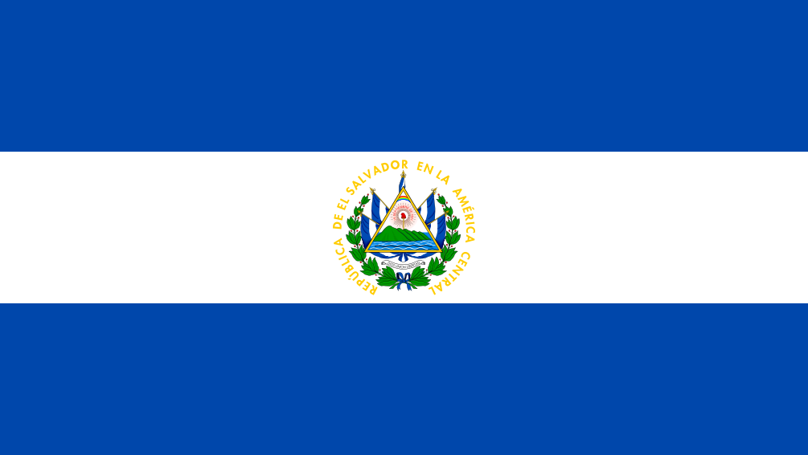

About Me
My name is Ronal Orellana. I currently work in a Bussiness Area for a Bank in El Salvador. I am very excited to be part of this course, and with a great desire to learn every day.


El Salvador is the smallest and most densely populated of the seven Central American countries. Despite having little level land, it traditionally was an agricultural country, heavily dependent upon coffee exports. By the end of the 20th century, however, the service sector had come to dominate the economy.